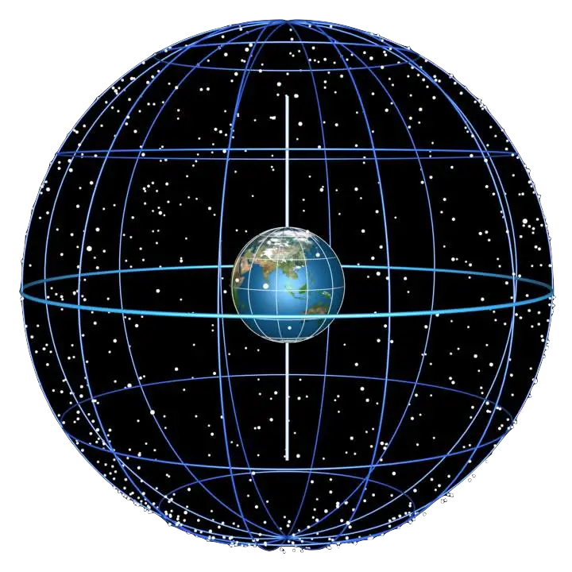

The setup and approach for this puzzle is a little deceptive - I initially thought you handle all 6 planets, proceed with the
below approach, and you're done. While this is nearly correct, I realized my mistake in this when I saw my first submission was incorrect.
In fact, there were barely any correct submissions the first few days! Re-reading the puzzle, it is noted that the planets are only
visible during the night, which means we must also consider the single star in addition to the 6 other planets. With that in mind, I did the below work:
Firstly, imagine the planet Pyrknot at the centre of a celestial sphere, as shown below, and suppose each planet and the star takes a point at random on this celestial
sphere. We are told this explicitly for the planets, but for the star, it is implied since we assume we rotate around the star and on our own axis like all other
planets. So, the star's position is also random with respect to the sky on Pyrknot due to rotational symmetry.

For simplicity, assume the friend on Pyrknot is at the north pole. Define the events:
- $A$ : There exists some location on Pyrknot that all 6 planets are visible
- $B$ : The friend on Pyrknot can see all 6 planets
Notice that $B\subset A$. Then form the puzzle statement, we want to find:
$$\alpha=\mathbb{P}(B|A)=\frac{\mathbb{P}(A\cap B)}{\mathbb{P}(A)}=\frac{\mathbb{P}(B)}{\mathbb{P}(A)}$$
Let's start with $\mathbb{P}(B)$. Notice that any planet, represented as a point on the celestial sphere, will be
visible from the North Pole (my friend's location), if the planet is in the top half/hemisphere of the celestial sphere (above their horizon). Since each
planet's position is random, the probability that any planet will be in the top half of the celestial sphere is simply $\frac 12$.
So we want all 6 planets to be in the top half, and the star to be in the bottom half (below their horizon, i.e nighttime), as planets are only visible at night. So in total,
we have:
$$\mathbb{P}(B)=\left(\frac 12\right)^7=\frac{1}{128}$$
For $\mathbb{P}(A)$, we simply want the probability that all 6 planets lie in one common hemisphere (no mater where you slice
the celestial sphere), and the star to be in the opposite hemisphere. Due the star's position in the Pyrknothian sky is random and uniform as we orbit,
and symmetry between the hemisphere's, this is equivalent to asking the probability that $7$ points (6 planets, 1 star) chosen
randomly on a sphere (the celestial sphere) lie in a common hemisphere.
If you're still not convinced, take the star's diametrically opposite point reflected in the flat part of the hemisphere, and
call this an 'image-star'. If the image-star is above the horizon, the real star is below the horizon, so we are asking the probability
that 6 planets + the image-star is on one common hemisphere.
A quick Google search to this question leads to Wendel's theorem, a formula which answers this question. Wendel's theorem is:
$$p_{n,N}=2^{1-N}\sum_{k=0}^{n-1}{N-1 \choose k}$$
Where $n=3$ is the dimension (we're in 3D), and $N=7$ is the number of points. Plugging in gives:
$$\mathbb{P}(A)=\frac{11}{32}$$
And so $\alpha$ is:
$$\alpha=\frac{1/128}{11/32}=\boxed{\frac{1}{44}}$$
Now for the tower. Define the new event:
- $B^*:$ The friend on Pyrknot can see all 6 planets from the tower
And so we want to find:
$$\beta=\frac{\mathbb{P}(B^*)}{\mathbb{P}(A)}$$
The tower essentially dips the horizon to allow the friend to see a planet that would be visible from any
ground location within distance $r$. On this planet of radius $R$, this is like expanding the angular radius of the friend's
viewing horizon by a small angle, so the effective viewing angle is $90^{\circ}+\frac rR$.
So instead of a hemisphere that the planets need to be in, they need to be in a spherical cap defined by a polar angle
of $90^{\circ}+\frac rR$. I guess technically it is not a cap, but can be approximated as such in the limit of $r$ being small.
A quick Google search says that this area is given by the equation $A=2\pi \tilde{R}^2(1-\cos \theta)$, where $\tilde{R}$
is the radius of the celestial sphere. And so the probability that a planet is caught within this spherical cap is the area $A$,
divided by the total area of the celestial sphere, $4\pi \tilde{R}^2$. So we have that:
$$\frac{2\pi \tilde{R}^2\left(1-\cos\left(90^{\circ}+\frac r R\right)\right)}{4\pi \tilde{R}^2}=\frac{1-\cos\left(90^{\circ}+\frac r R\right)}{2}=\frac{1+\sin\left(\frac r R\right)}{2}$$
And so for 6 planets, we take this expression to the power of 6. And again, we want the sun to be in the area excluded by this area,
so that's it nighttime and the planets are visible. So we take the complement:
$$1-\frac{1+\sin\left(\frac r R\right)}{2}=\frac{1-\sin\left(\frac r R\right)}{2}$$
And we have:
$$\mathbb{P}(B^*)=\underbrace{\left(\frac{1+\sin\left(\frac r R\right)}{2}\right)^6}_{\text{6 Planets}}\underbrace{\left(\frac{1-\sin\left(\frac r R\right)}{2}\right)}_{\text{Star}}$$
Since $r\ll R$, we can use the small angle approximation and also Taylor expand to look for the desired linear term.
$$\left(\frac{1+\sin\left(\frac r R\right)}{2}\right)^6\left(\frac{1-\sin\left(\frac r R\right)}{2}\right)\approx \frac{1}{128}+\frac{5}{128}\sin\left(\frac rR\right)+\cdots\approx \frac{1}{128}+\frac{5}{128}\cdot \left(\frac rR\right)$$
Taking the linear coefficient and conditining with $\mathbb{P}(A)$, we get our answer:
$$\beta=\frac{5/128}{11/32}=\boxed{\frac{5}{44}}$$
So our final answer is:
$$\boxed{\alpha=\frac{1}{44}\;\;\;\text{and}\;\;\;\beta=\frac{5}{44}}$$